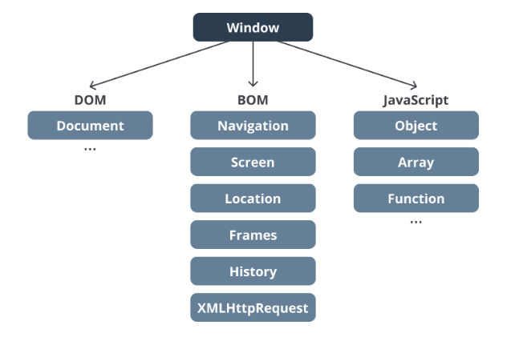
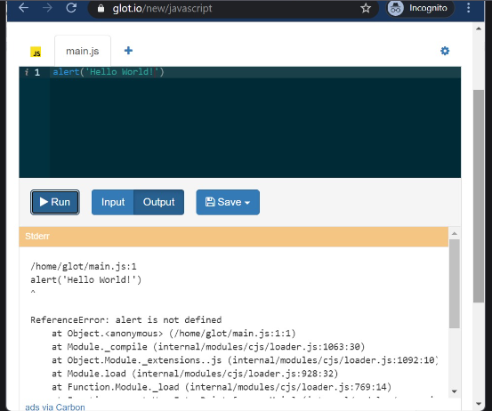

Browser Environment
Selama belajar materi JavaScript yang dibahas di dalam kelas ini, apakah Anda menyadari semua kode JavaScript berjalan di perangkat browser dan tidak pada perangkat lainnya? Mengapa demikian? Karena kita menggunakan runtime environment milik browser alias semua kode JavaScript dijalankan di atas platform browser
Pada awalnya Bahasa Pemrograman JavaScript didesain untuk berjalan di broser. Namun, seiring berjalannya waktu, kini banyak platform yang dapat menjalankan JavaScript di kuar browser. Platform tersebut menggunakan runtime Environment lain seperti Node JS. Salah satu contohnya adalah ketika kita menjalankan kode JavaScript pada glot.io
Walaupun JavaScript dapat dijalankan di luar browser, kita perlu tahu bahwa JavaScript yang berjalan di browser memiliki fungsionalitas khusus yang tidak bisa ditemukan di tempat lain. Hal tersebut karena ia dijalankan di dalam browser environment.
Apa istimewanya browser environment ini? Istimewanya terlatak pada "peralatan-peralatan" khusus yang dapat digunakan oleh kode JavaScript untuk berinteraksi dengan browser maupun dengan dokumen HTML yang kita buat. Masih ingat dengan istilah Browser Object Model dan Document Object Model(DOM)? Keduanya secara khusus hanya tersedia untuk JavaScript yang dijalankan dalam browser environment
Pada gambar di bawah ini, kita melihat representasi dari objek window yang hanya bisa diakses oleh JavaScript dalam browser environment. Dengan melalui objek window, kita bisa mengakses DOM serta BOM. 
Sehingga, jika kita menjalankan kode JavaScript yang berjalan di luar
browser environment, maka
browser object (window) dan
document object (document) tidak akan
tersedia dan menyebabkan error. Sebagai contoh, jika kita menjalankan
method alert di environment browser, alert dialog akan
muncul seperti berikut. 
Namun, jika menggunakan glot.io, method tersebut akan melemparkan error karena pada situs tersebut (compiler online) kode JavaScript dijalankan di environment NodeJS, yang mana tidak tersedianya BOM maupun DOM. 
Dalam pemrograman front-end kita akan sering bergulat dengan BOM serta DOM untuk mempercantik tampilan website. Sudah siap untuk mengetahui lebih lanjut tentang keduanya?